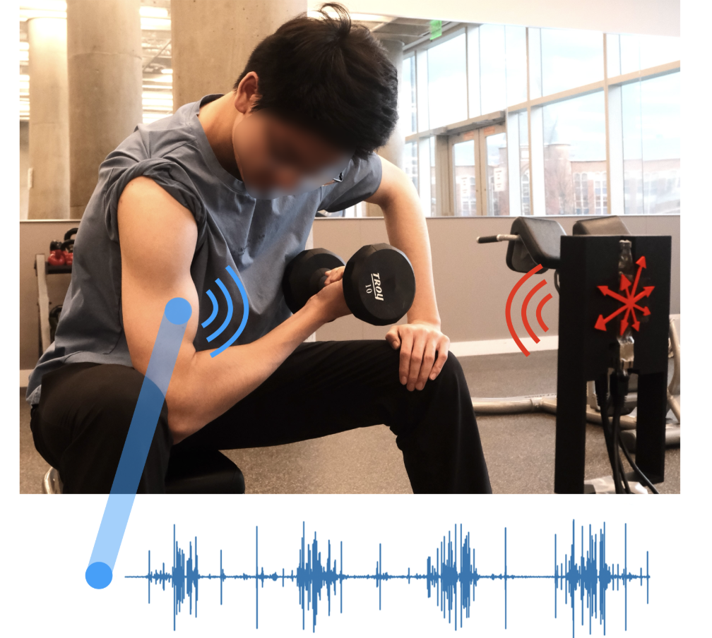

CAREER: Pushing the Limits of Low-Power Wide-Area Networks
This webpage tracks the current progress of our NSF-funded project. Our sincere thanks to the National Science Foundation for supporting our research.
Project Goals
Future smart cities will have to provide Internet connectivity to millions of energy-starved Internet-of-Things devices - even those several miles away from the nearest wireless base station. To this end, recent years have seen novel Low-Power Wide Area Networks (LP-WANs) deployed, such as LoRa and NB-IoT. Unfortunately, today's LP-WAN technologies require a battery to power these devices, which impacts their maintenance cost and reliability. This proposal aims to develop a city-scale LP-WAN architecture that offloads connectivity, sensing and even the source of energy to the more capable base stations and cloud infrastructure. We develop an architecture where base stations actively collaborate to enable faster and more reliable connectivity to low-power devices, sense their location and surroundings and provide energy they require to operate in the first place. The proposed work has a detailed integrated education and outreach program including course projects that leverage a live testbed and summer labs for K-12 students in Greater Pittsburgh. The proposed work will be deployed initially to network existing smart sensors at CMU and later scale to surrounding city infrastructure, through extensive collaborations with the City of Pittsburgh, forming a first-of-its-kind university-led programmable LP-WAN deployment.
The proposed work enables Low-Power Wide-Area Networking in dense smart-city deployments along three axes: (1) Long-Range Wireless Charging: First, the proposal investigates a system at the base stations that beams power to battery-free clients at unknown locations. We explore base station and client designs to perform wireless charging over large distances, orders-of-magnitude higher than prior work. (2) Pushing LP-WAN Speed and Scaling Limits: Next, the proposed work explores a solution to decode collisions from even the weakest of LP-WAN signals that cannot be detected at any single base station. The proposal argues why power starved LP-WAN clients motivate the need for even mundane PHY-layer functions at the client: radio configuration, decoding and rate adaptation - to be offloaded to the more capable infrastructure. The proposal then explores intelligent ways for base stations to collaborate at the cloud, despite limited backhaul bandwidth. (3) City-Scale Wireless Sensing: Finally, the proposed work investigates novel sensing solutions that use RF signal measurements received both from city-wide low-power radios as well as CubeSats in Low-Earth Orbit, collated at the edge and cloud. We evaluate how such a system can sense properties such as structural health and atmospheric moisture at city-scale, without requiring dedicated sensors on low-power devices.
Activities & Outcomes
Intellectual Merit

GigaFlex: pushing throughput limits of low-power wide-area networks (SenSys 2026).
The proposed research will be fully implemented and evaluated on Low-Power WANs.
SonicSieve: Bringing Directional Speech Extraction to Smartphones Using Acoustic Microstructures, Kuang Yuan, Yifeng Wang, Xiyuxing Zhang, Chengyi Shen, Swarun Kumar, and Justin Chan, CHI 2026
GigaFlex: Contactless Monitoring of Muscle Vibrations During Exercise with a Chaos-Inspired Radar, Jiangyifei Zhu, Yuzhe Wang, Tao Qiang, Vu Phan, Zhixiong Li, Evy Meinders, Eni Halilaj, Justin Chan and Swarun Kumar, SenSys 2026
Surface Material and Roughness Sensing using mmWave via Surface Scattering and Ambient Vibrations, Yawen Liu, Bert Shan and Swarun Kumar, SenSys 2026
Towards Smart Wireless Power Transfer Through a Localizing and Beam-Focusing Magnetic Metasurface, Yawen Liu and Swarun Kumar, HotMobile 2026
PolarVisor: Clutter-free, Electronics-free Fiducial Markers for mmWave Radars Printed on Paper, Junbo Zhang, Yiwen Song and Swarun Kumar, MobiCom 2025
Can we make FCC Experts out of LLMs?, Atul Bansal, Veronica Muriga, Jason Li, Lucy Duan and Swarun Kumar, HotMobile 2025
WindDancer: Understanding Acoustic Sensing under Ambient Airflow, Kuang Yuan, Dong Li, Hao Zhou, Zhehao Li, Lili Qiu, Swarun Kumar and Jie Xiong, IMWUT 2025
DeWinder: Single-Channel Wind Noise Reduction using Ultrasound Sensing, Kuang Yuan, Shuo Han, Swarun Kumar and Bhiksha Raj, InterSpeech 2024
Reinforcement learning-based framework for whale rendezvous via autonomous sensing robots, Nishant Mehrotra, Divyanshu Pandey, Ashutosh Sabharwal, Akarsh Prabhakara, Yawen Liu and Swarun Kumar, Science Robotics 2024
A Roadmap for the Democratization of Space-Based Communications, Veronica Muriga, Swarun Kumar, Akshitha Sriraman and Assane Gueye, HotNets 2024
Adapting LoRa Ground Stations for Low-latency Imaging and Inference from LoRa-enabled CubeSats, Akshay Gadre, Zachary Machester, and Swarun Kumar, ACM ToSN 2024
The Interplay of Clustering and Evolution in the Emergence of Epidemics on Networks, Mansi Sood, Rashad Eletreby, Swarun Kumar, Chai Wah Wu, Osman Yagan, ICC 2023
SelfieStick: Towards Earth Imaging from a Low-Cost Ground Module Using LEO Satellites, Vaibhav Singh, Osman Yagan and Swarun Kumar, IPSN 2022
A Community-Driven Approach to Democratize Access to Satellite Ground Stations, Vaibhav Singh, Akarsh Prabhakara, Diana Zhang, Osman Yagan and Swarun Kumar, MobiCom 2021
A Cloud-Optimized Link Layer for Low-Power Wide-Area Networks, Artur Balanuta, Nuno Pereira, Swarun Kumar and Anthony Rowe, MobiSys 2020
Poster: Does Ambient RF Energy Suffice to Power Battery-free IoT?, Atul Bansal, Swarun Kumar and Bob Iannucci, MobiSys 2020
Broader Impacts
Three graduate students are being trained during the course of this research. The PI participated in several events organized by the Gelfand Center at CMU which invites groups of K-12 students and teachers to the CMU campus to learn about state-of-the-art research.